Interactive Information Design
Week one: Storytelling with data
Heather Battaglia (or Billings) / @hbillings
Hello There
My name is Heather and I will be your host this afternoon. Please keep your arms and legs inside the class at all times.
Today's agenda
- Class overview
- Introductions
- Warm-up exercise: Driving is why you're fat (GOOD Magazine)
- Lecture: Introduction to information design
- Closing lab & discussion: Strife in the Middle East
Canvas Overview
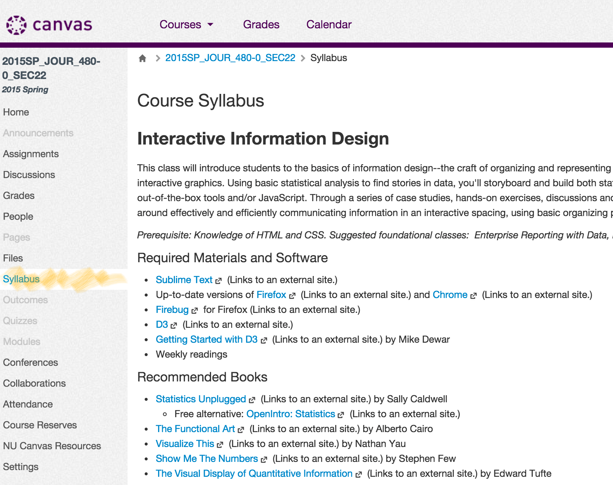Canvas Overview
Canvas Overview
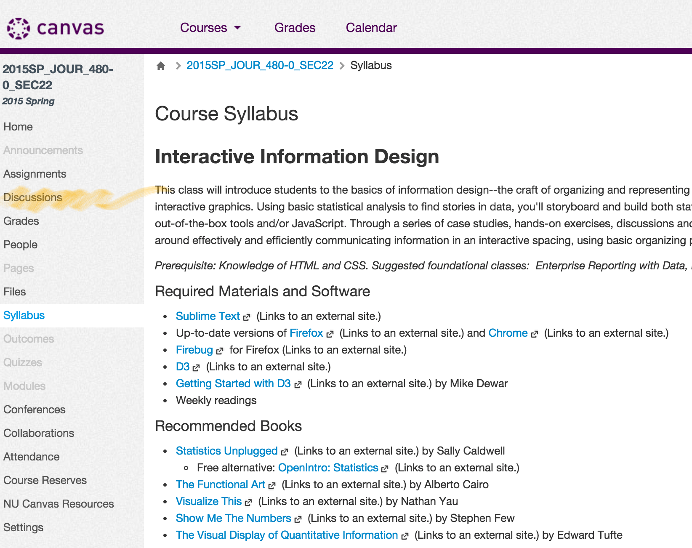Canvas Overview
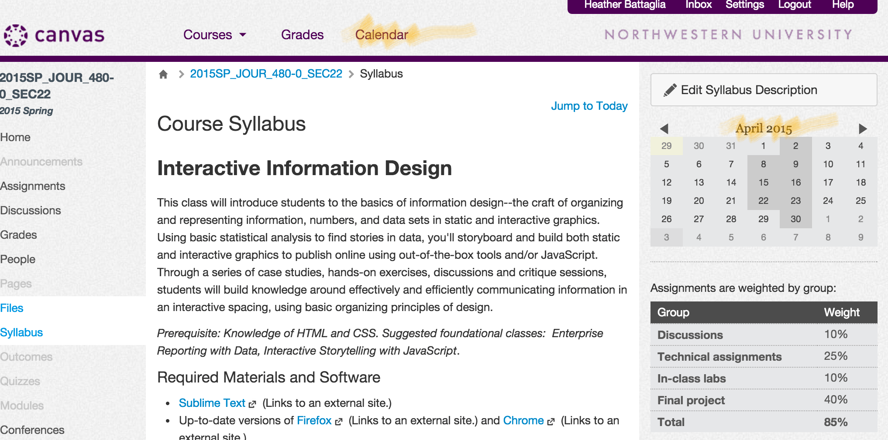Today's agenda
- Class overview
- Introductions
- Warm-up exercise: Driving is why you're fat (GOOD Magazine)
- Lecture: Introduction to information design
- Closing lab & discussion: Strife in the Middle East
http://goo.gl/forms/pK9LfxM0XJ
Today's agenda
- Class overview
- Introductions
- Warm-up exercise: Driving is why you're fat (GOOD Magazine)
- Lecture: Introduction to information design
- Closing lab & discussion: Strife in the Middle East
GOOD Magazine Lab
You're a top editor for GOOD magazine, and a few weeks ago, you signed off on the following pitch for an infographic in an editorial meeting:
"There’s this awesome study that basically shows that driving is a major contributing factor to obesity. So I want to visualize that data and show that relationship."
The design's in your inbox, and you've got 20 minutes to prep for a meeting.
Objectives
Evaluate the graphic on the following criteria:
- Editorial integrity (you’ll need to take a look at the source of this data)
- How well this infographic fosters efficient and effective understanding of the data.
Prep for the meeting:
- List any misgivings you have or questions you have for the designer.
- For each criticism, offer an alternative.
Ira Glass on developing skill
Today's agenda
- Class overview
- Introductions
- Warm-up exercise: Driving is why you're fat (GOOD Magazine)
- Lecture: Introduction to information design
- Closing lab & discussion: Strife in the Middle East
Information design is the practice of presenting information in a way that fosters efficient and effective understanding of it. The term has come to be used specifically for graphic design for displaying information effectively, rather than just attractively or for artistic expression. Information design is closely related to the field of data visualization and is often taught as part of graphic design courses.
(Thanks, Wikipedia.)
Excellence in statistical graphics consists of complex ideas communicated clarity, precision, and efficiency.
—Edward Tufte
Graphical displays should:
- show the data
- induce the viewer to think about the substance rather than about methodology, graphic design, the technology of graphic production, or something else
- avoid distorting what the data have to say
- present many numbers in a small space
Graphical displays should:
- make large data sets coherent
- encourage the eye to compare different pieces of data
- reveal the data at several levels of detail, from a broad overview to the fine structure
- serve a reasonably clear purpose: description, exploration, tabulation, or decoration
- be closely integrated with the statistical and verbal descriptions of a data set.
Napoleon's March into Russia
Charles Joseph Minard

The informations used for drawing the map were taken from the works of Messrs. Chiers, de Ségur, de Fezensac, de Chambray and the unpublished diary of Jacob, pharmacist of the Army since 28 October.
In order to facilitate the judgement of the eye regarding the diminution of the army, I supposed that the troups under Prince Jèrôme and under Marshal Davoust, who were sent to Minsk and Mobilow and who rejoined near Orscha and Witebsk, had always marched with the army.
—Charles Joseph Minard
Good data visualization
tells a good story.
(And, as Tufte says, "a silly theory means a silly graphic.")
- Craft a visual lede.
- Provide the context. (Why does the data behave this way? What's behind it?)
- Enable a deep dive.
- Data at a glance, and data you can sit with.
- Wow! … Huh? vs. Huh? … Wow.
Types of charts
Bar Charts
Basic categorical comparison
Bar Charts
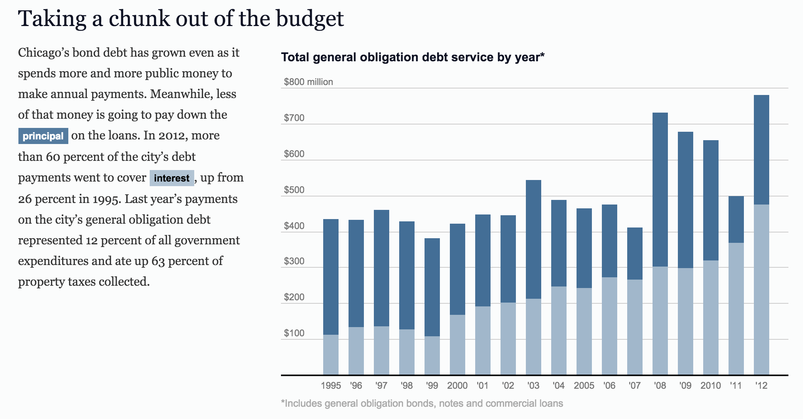Bar Charts
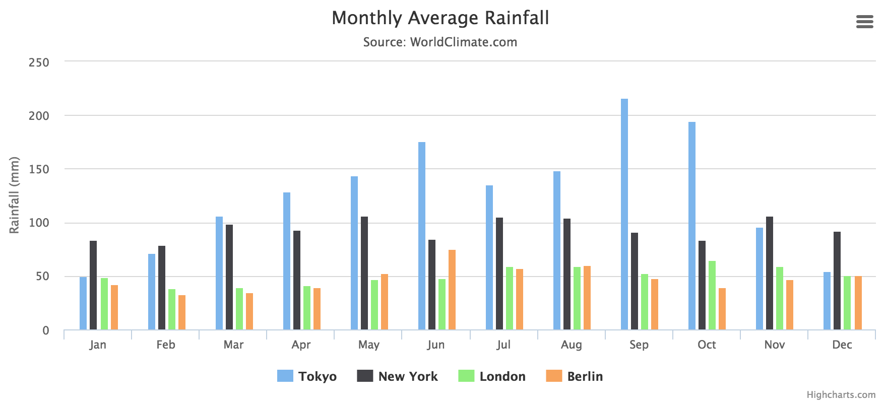Pie Charts
How data breaks down in different groups.
(Almost never do this.)
Pie Charts
A, B, C: Three points in time
1,2,3,4,5: Political candidates share of the vote
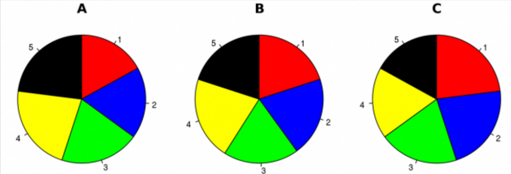Pie Charts
A, B, C: Three points in time
1,2,3,4,5: Political candidates share of the vote
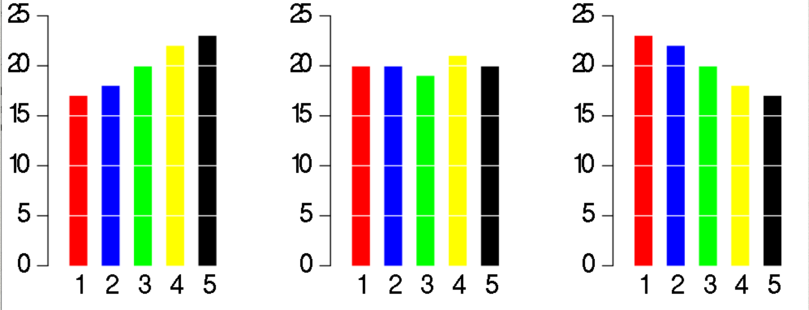Pie Charts
Best for simple data
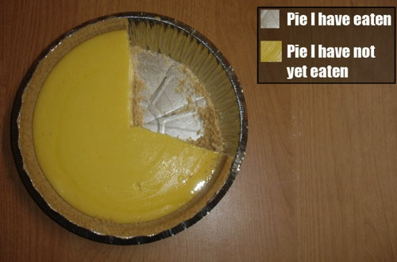Scatterplots
Used to spot or illustrate trends
(Requires knowledge of information)
Line graphs
Trends over time
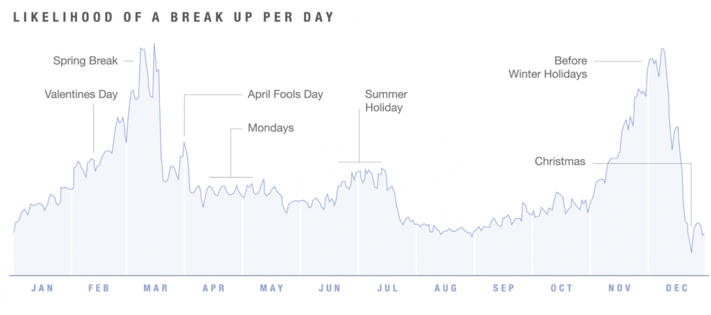Area charts
Line graphs, but filled in
Colored area corresponds to data
Change in size over time
Bubble charts
Area corresponds to size of data
Maps
Geography is part of the story
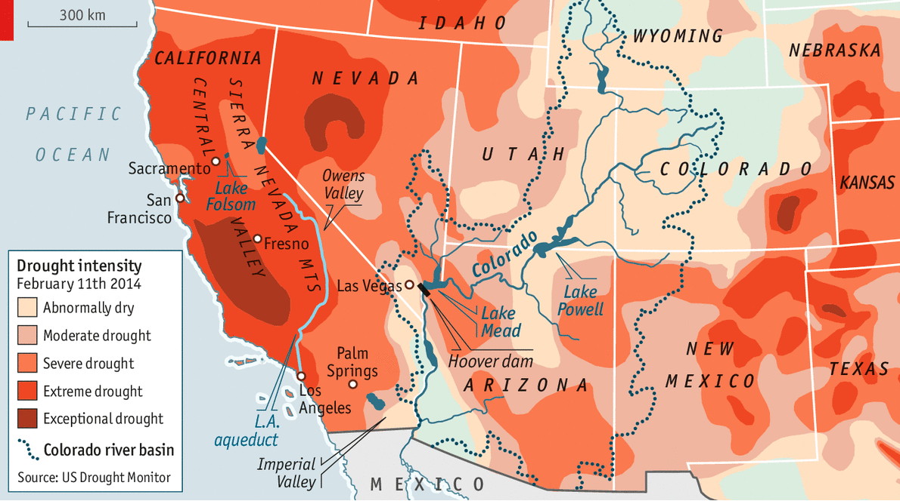Maps
Geography is not always the point of the story.
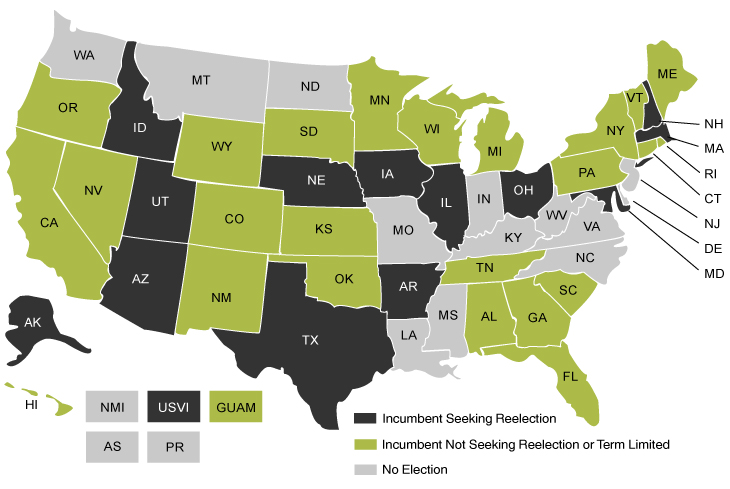Maps
Like pie charts, maps can be difficult to interpret.
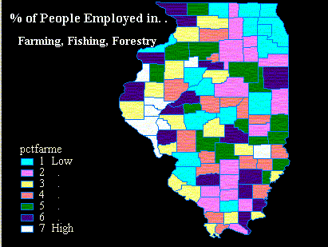Maps
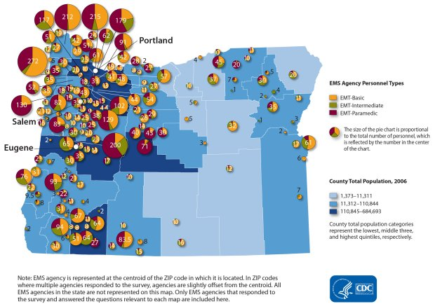Timelines
Event-based over time
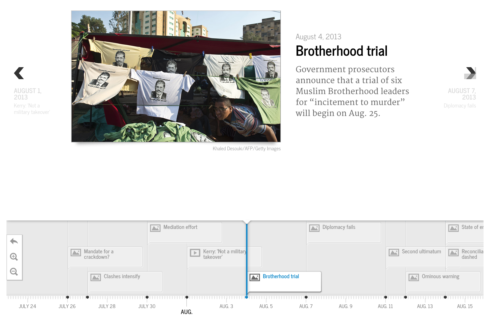Venn diagrams
Area charts that intersect
Highlights commonality
Glyphs
Individual glyphs relate to number of data
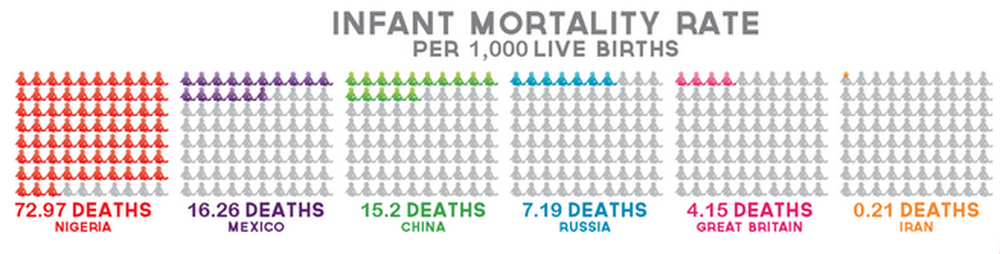Glyphs
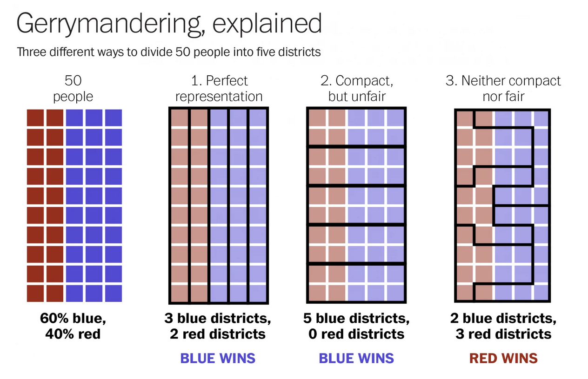Flow charts
Depict evolution or decision-making tree
Set goals before you begin...
- Compare year to year
- Illustrate trends of the past 10 years
- Display data points for individual years
...then measure your illustrations against these goals.
- What’s your first impression? (Visual headline!)
- Are things better or worse than they were five years ago?
- What was the trade gap in 1998?
Things to consider this quarter:
- You must know the story.
- To know the story, you must know the data.
- Don’t leave the analysis to us! Annotate. Walk us through. Break it down.
- Tiered content — visual headline, central narrative (cause/effect), detailed reading (individual data pts.)
- You are not your target audience. Test, iterate, test.
Things to consider this quarter:
- Hierarchy
- Titles and labels
- Axes
- Use of color — make it meaningful
- Different charts for different stories
Today's agenda
- Class overview
- Introductions
- Warm-up exercise: Driving is why you're fat (GOOD Magazine)
- Lecture: Introduction to information design
- Closing lab & discussion: Strife in the Middle East
Strife & power in the new Middle East
Working in teams of 3-4, and using the article "Strife and Power in the New Middle East" as your guide, create a proposal for an information graphic. Set goals for the story before you begin, and work on a series of sketches together. Weigh each of them against your set goals. Come up with the solution you think is best and be ready to present to the group.
{kind=link}